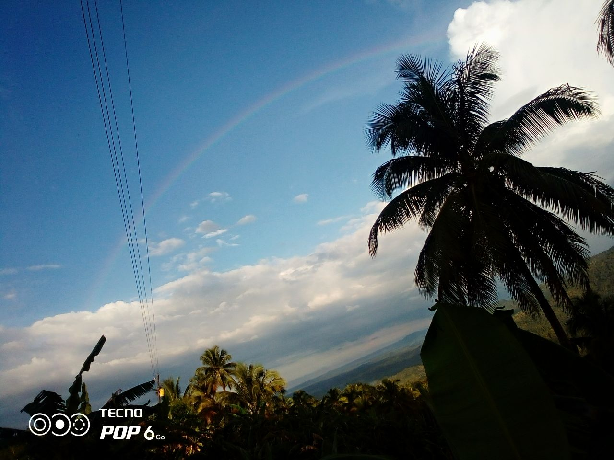
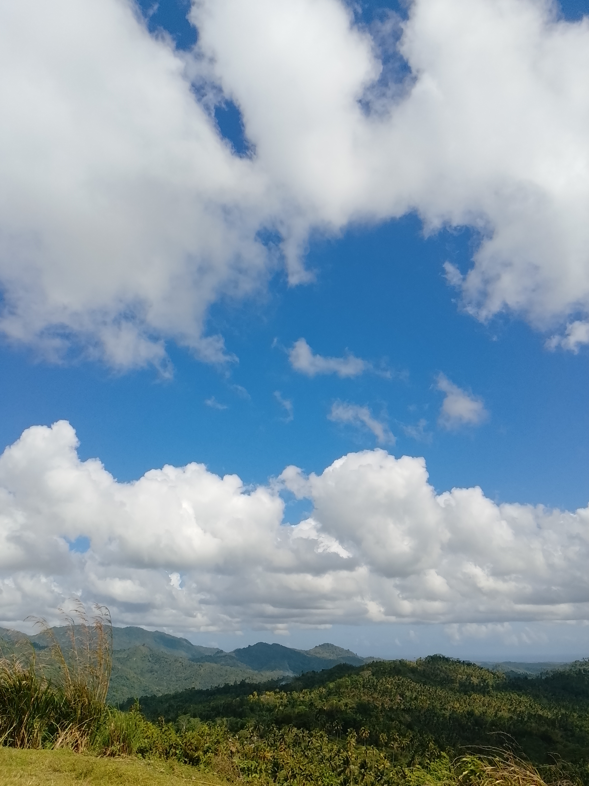
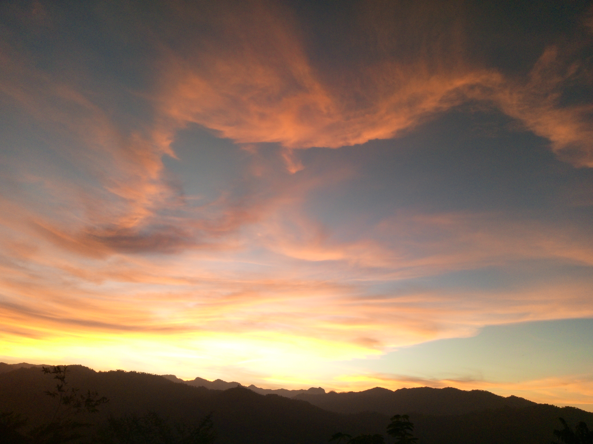
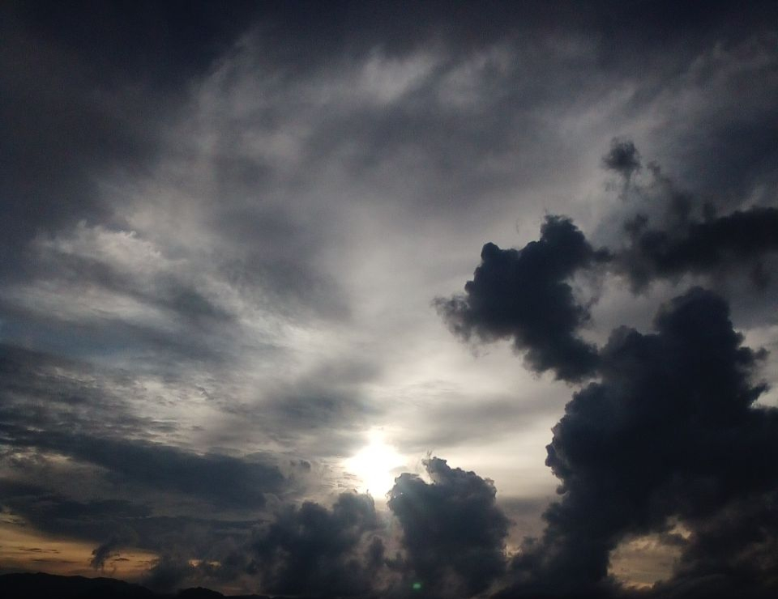
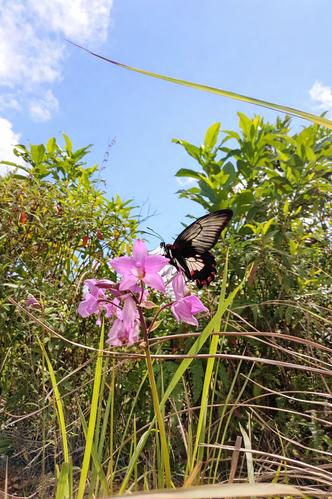
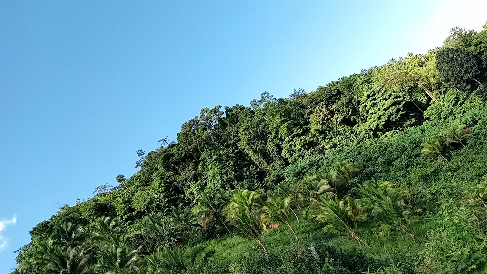
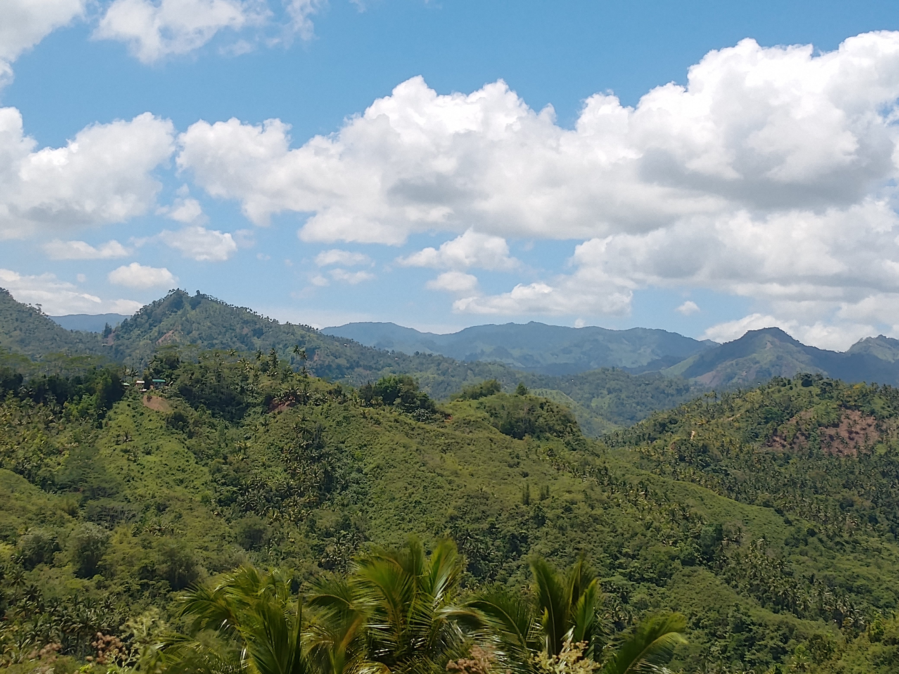
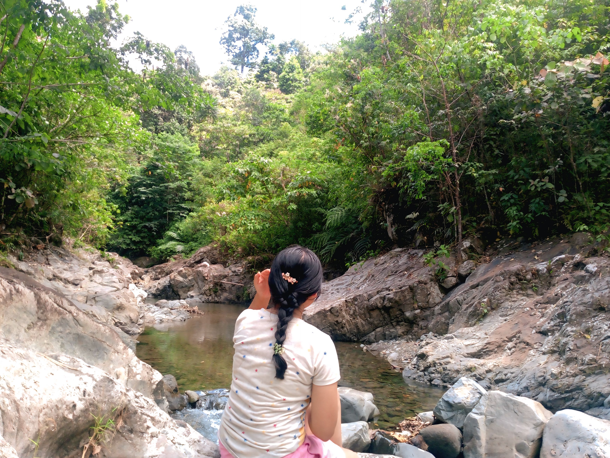
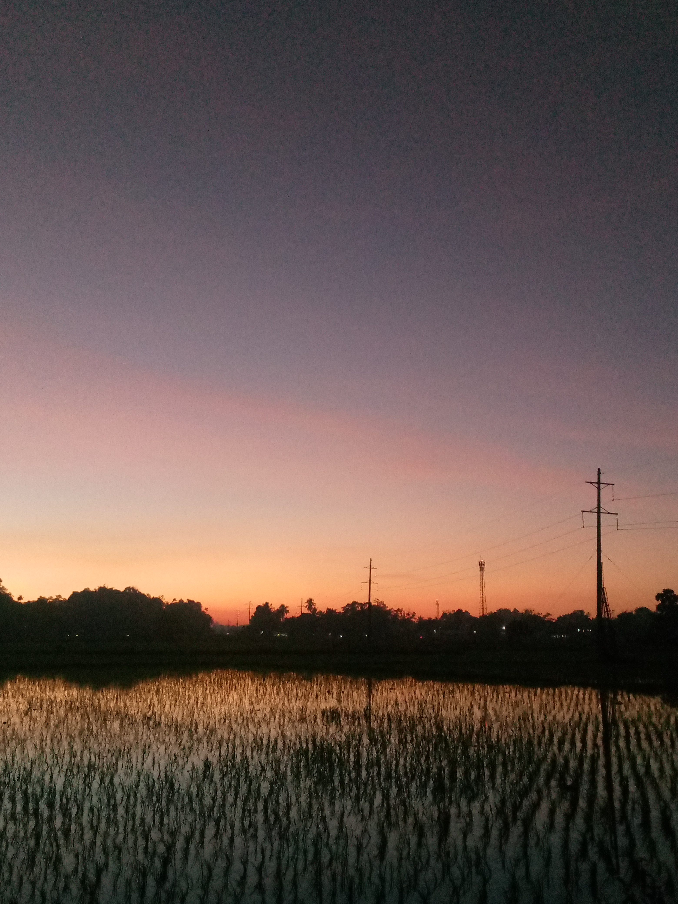

Adventure Gallery
Photos from each kind of trip, plus a short audio track per category—press play when you want a calm backdrop while you scroll.
Sunrise


Inspirational audio — New beginnings each day.
Sky View




Inspirational audio —Confidence and trust.
Wildflowers



Inspirational audio —Embracing uniqueness.
Mountains




Inspirational audio —Humility and success.
Forests


Inspirational audio —Strength through hardship.
Sunset


Inspirational audio — Managing expectations.